UAV · Embedded Flight Control · Wireless Telemetry
Autonomous Quadcopter UAV — Flight Control, Telemetry & FPV
Designed, assembled and flight-tested an autonomous quadcopter with GPS waypoint navigation, MAVLink telemetry to a ground control station, failsafe protection, and a live 5.8 GHz video link for remote surveillance.
Implemented Project — Built & Flight-Tested
System overview

- Author
- Mohammed Mahyoub
- Scope
- Team project covering propulsion sizing, airframe and electronics integration, sensor calibration, PID tuning, flight-mode and failsafe testing, telemetry and video systems, and technical documentation.
- Build
- DJI F450 frame, 4× DJI 2212/920KV motors with 30A ESCs, 3S LiPo, APM 2.6 (MPU6000 IMU, barometer), uBlox NEO-6M GPS/compass, sonar and optical-flow sensors, 3DR 433 MHz telemetry (≈400 m range tested), 2.4 GHz RC via PPM encoder, 5.8 GHz video with MinimOSD. Propulsion sized in eCalc (≈1.6 kg all-up weight).
- Testing
- Calibrated accelerometer, compass, RC and ESCs; tuned the PIDs (final rate gains roll/pitch P 0.15 · I 0.10 · D 0.004, stabilize P 4.5); flight-tested Stabilize, Loiter, AltHold, Auto (waypoints), Guided and Follow-Me (phone GCS), plus radio, geofence and battery failsafes (land / return-to-launch).
- Fixes
- Root-caused faults from flight logs: re-centred an off-centre IMU causing drift; damped vibration and shielded the barometer for Loiter; low-pass filtered sonar for AltHold; moved the compass away from ≈80% motor interference and set local magnetic declination (2.11°E) to correct Auto-mode heading.
- Study
- Backed by a UAS communications study: command-and-control and telemetry links (GSM/GPRS, line-of-sight 900 MHz–5.8 GHz) and UAS spectrum requirements (ITU-R M.2171).
Engineering rationale
Control, telemetry and video
The APM flight controller reads navigation and attitude sensors and drives the propulsion system. RC commands, MAVLink telemetry and the 5.8 GHz FPV stream are separate paths. Keeping those paths explicit explains why a working video link does not prove command or navigation health.
Testing as an engineering loop
The report-derived material covers calibration, PID tuning and flight-mode testing. Log-driven fixes include IMU re-centring, vibration damping and barometer shielding, sonar filtering and compass placement. Before/after figures should be read with the matching fault discussion in the README.
Scope of reported values
Propulsion values from eCalc are estimates; telemetry range and flight observations come from the documented tests. Tuned parameters describe this build and are not universal settings for other aircraft. The new overview diagram simplifies the original wiring and does not replace the build documentation.
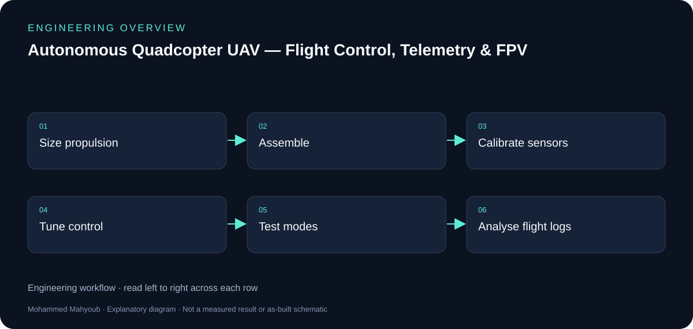
Evidence and validation
Review the documented implementation against these validation topics; measured results are shown only where provided by the source.
- Sensor and RC calibration
- Propulsion estimate versus observed behaviour
- Mode/failsafe test record
- Before/after logs for each reported fix
Source gallery
Figures from the existing project repository, public notebook outputs, or corresponding LinkedIn project media. Original screenshots and existing explanatory figures retain their source context.

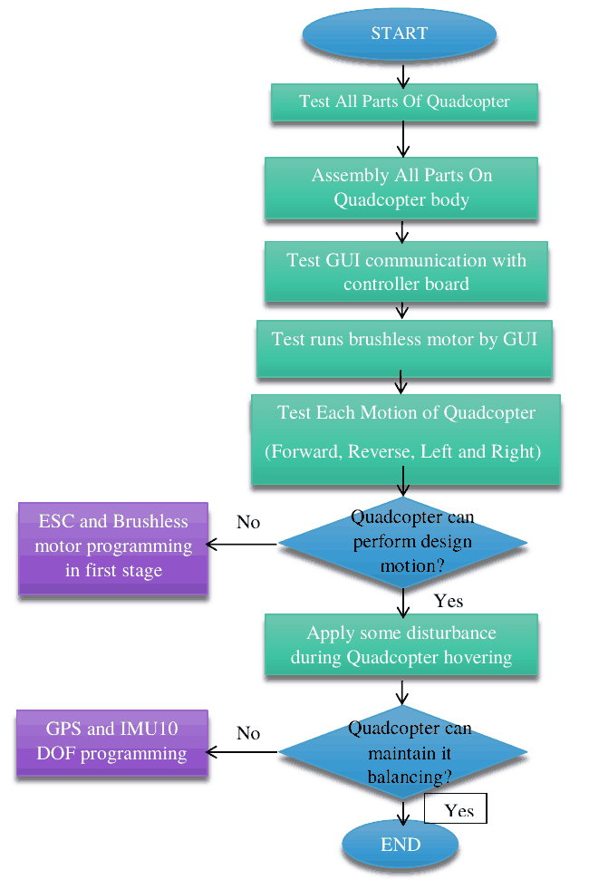

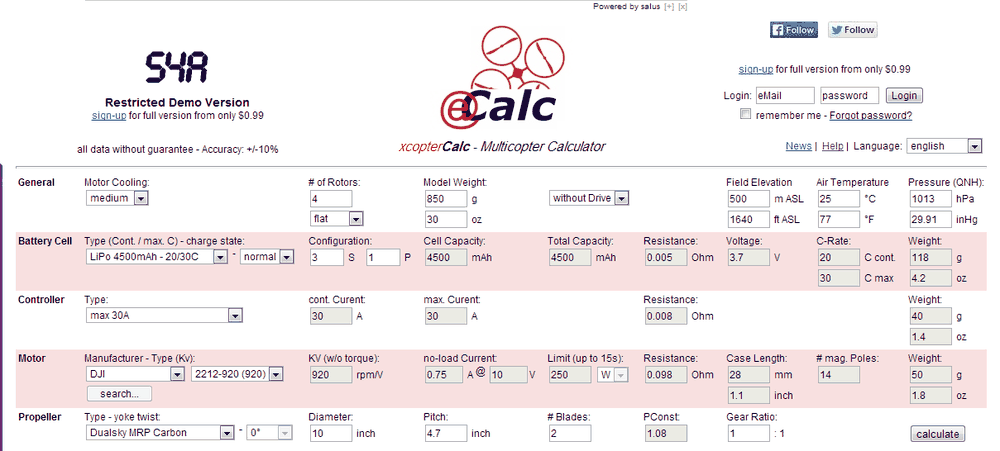

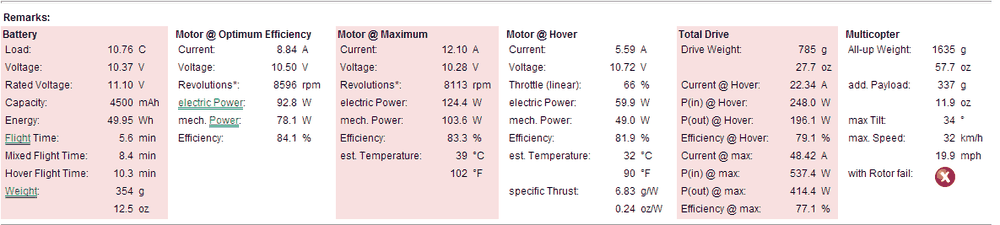

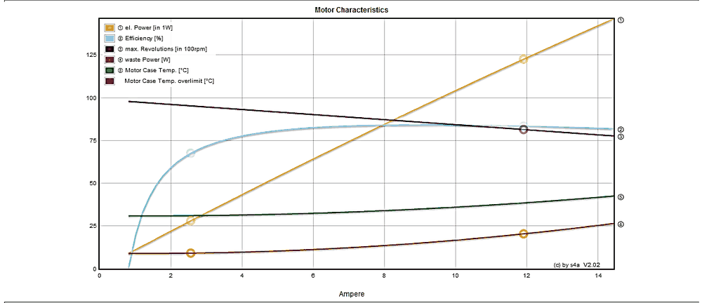

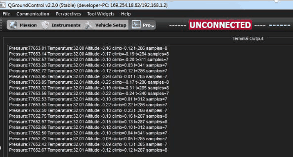

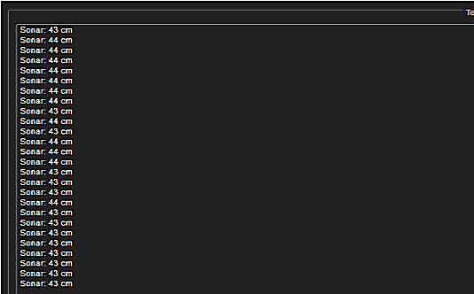

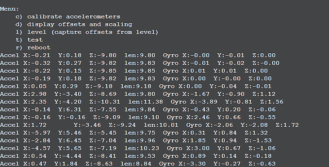

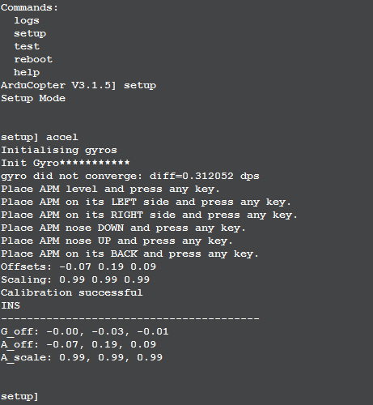

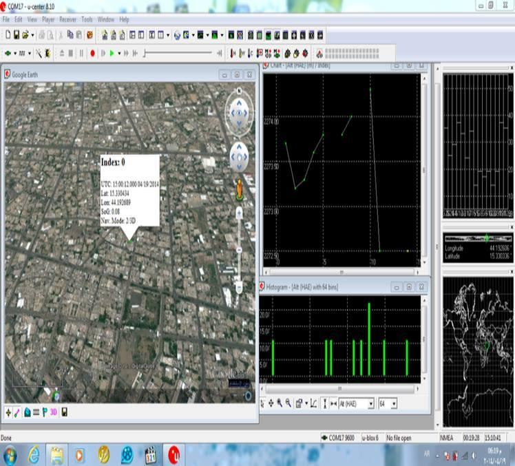

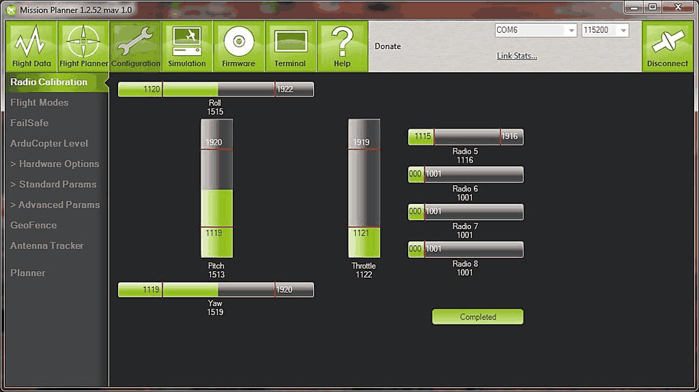

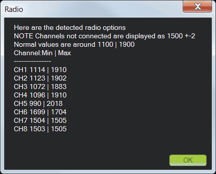

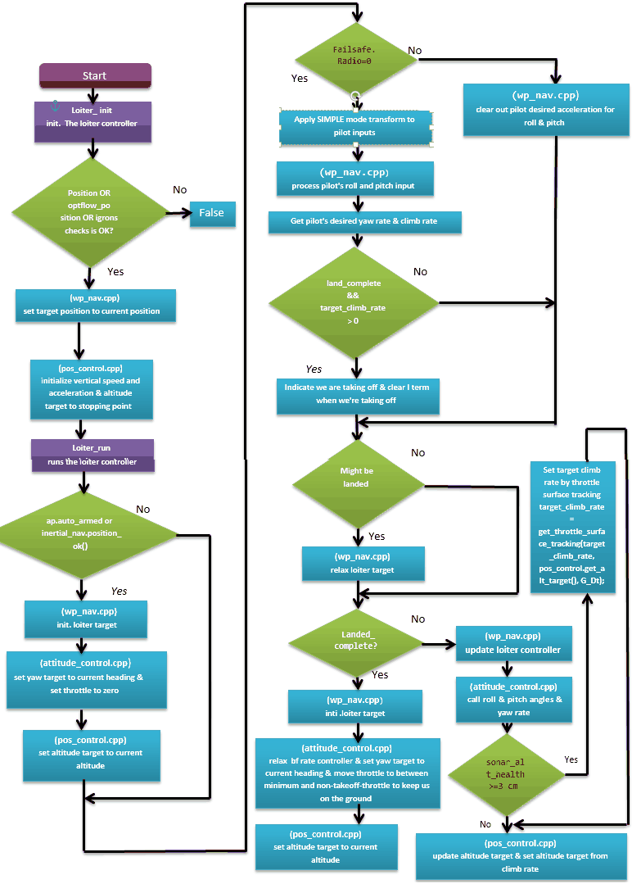

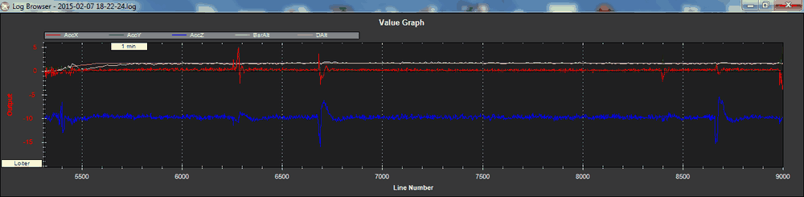

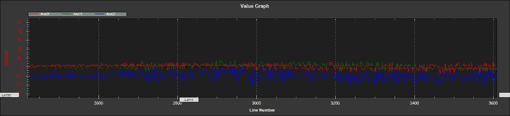

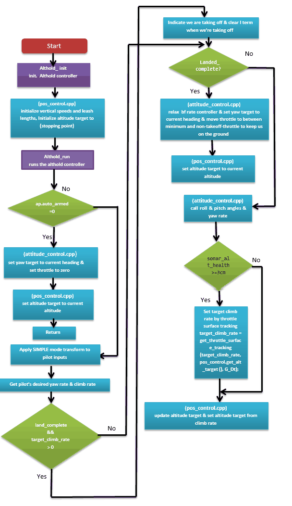

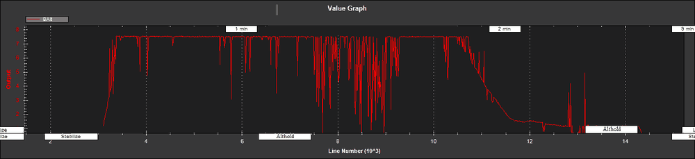

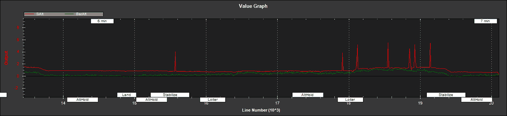

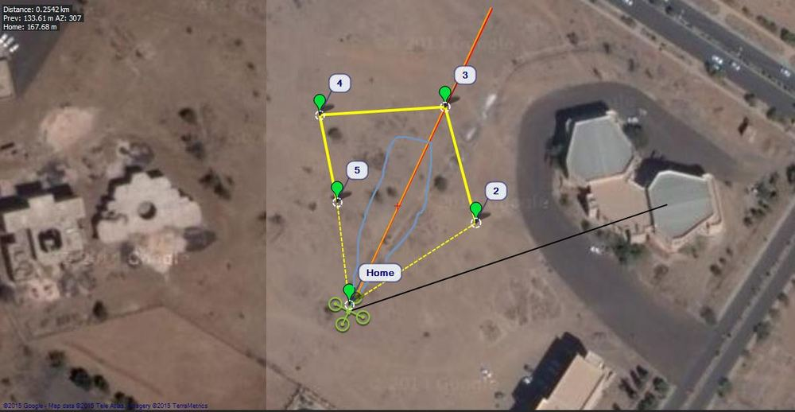

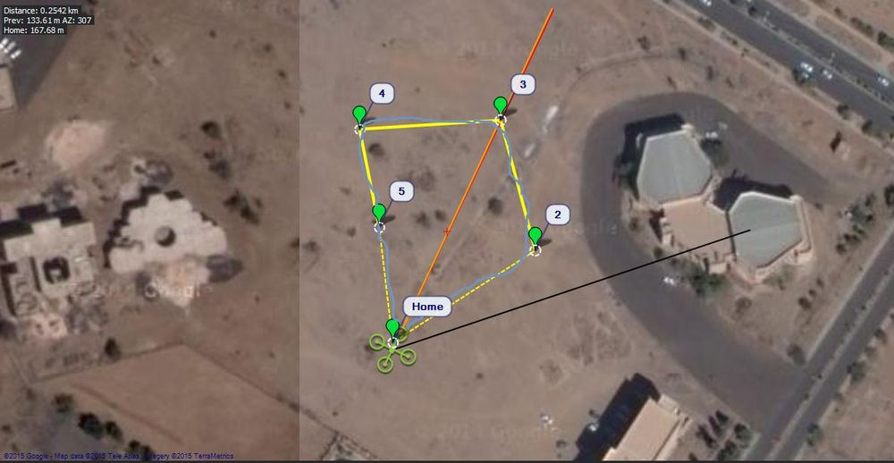